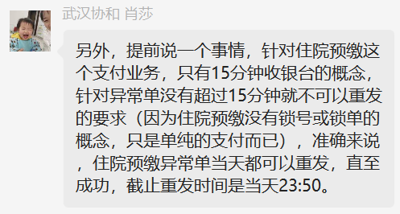
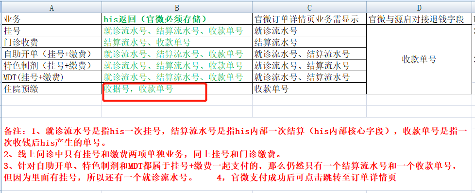
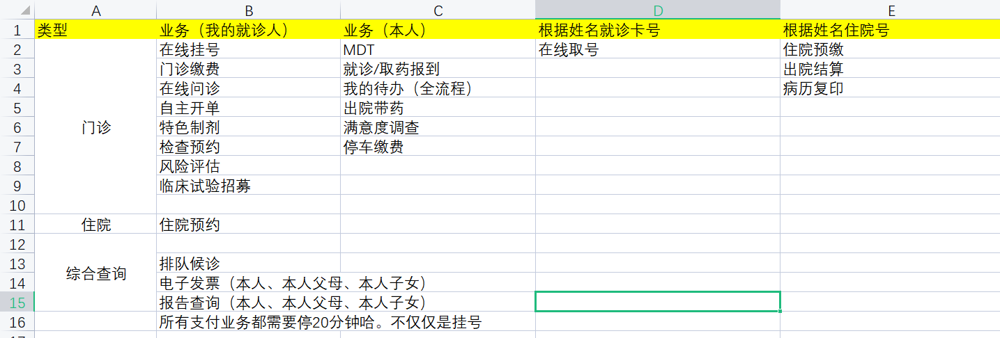
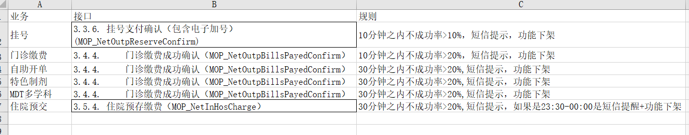

特色制剂和MDT的单据在支付时回存在挂号费

针对需要选择就诊人的业务必须校验是否建档，建档才能进行,若选择就诊人后未建档则统一在页面上提示标红文字“当前就诊人未建档，请尝试在‘我的就诊人’处解绑后重新添加再试，如还是未建档，请您前往线下财务办卡窗口建档，方可使用此功能。”
订单界面显示如下：1，到了收银台未支付的状态叫‘交易取消’2，支付成功的状态叫‘挂号/门诊缴费/自助开单/XXX成功’ 3，针对可以在官微上自己申请退号或退费的，下面点击按钮叫‘退号/退费申请’（除了挂号业务以外的其他都叫‘退费申请’），退号/退费申请成功的状态叫‘退号/退费申请成功’
4、另外对于支付异常的状态统一叫‘支付异常’

MDT